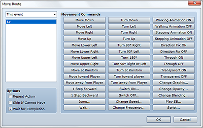

A move route is what determines how to move a player or event. You set a move route when you specify Custom under the Autonomous Movement setting for an event or use the Set Move Route event command.
In either case, you set the route in the Move Route dialog box. Routes are created/edited by combining movement commands that control such things as the player/event's movement and direction. For example, if you enter the move commands Move Right, Move Down, Move Left, and Move Up in that order, the player/event will move in a clockwise lap.

Select the target actor/event. Specify this only when setting the Set Move Route event command.
A list of movement commands that have been added. Add movement commands in order according to the route you want to set.
Selecting a list item by clicking it specifies the position for adding the command clicked on the command list. In the shortcut menu that appears when you right-click an item, you can perform such operations as copying and editing settings.
A command group for controlling the character (player/event) movement and direction. Clicking a button adds (inserts) the corresponding command at the currently selected position on the command list. The commands are described below. Note that one step is equal to moving one tile.
Moves the player/event one step in the direction indicated by the command name.
Moves the player/event one step up, down, left, or right, as selected at random.
Moves the event one step toward the player.
Moves the event one step away from the player.
Moves the player/event one step forward in the current direction.
Moves the player/event in the opposite direction, without changing the direction being faced.
Moves the player/event by jumping. Specify the distance to jump in X and Y (-100 to 100, with positive values indicating right/down). Obstacles will be passed through when jumping. Note that when a party for which the Player Followers setting is On is moved by jumping, the second and subsequent members will stay where they are.
Specify the length of time to halt processing in frames (1 to 999). One frame is equivalent to 1/60 of a second.
Changes the direction the player/event is facing to the direction indicated by the command name.
Changes the direction the player/event is facing 90 degrees in the direction indicated by the command name.
Changes the direction the player/event is facing to the opposite direction.
Turns the character/event right/left at random.
Changes the character/event's direction up/down/left/right at random.
Changes the character/event's direction toward the player.
Changes the character/event's direction away from the player.
Changes the specified switch to the value indicated by the command name.
Changes the Speed setting for Autonomous Movement for the target map event. This change stays in effect even after movement ends.
Changes the Frequency setting for Autonomous Movement for the target map event. This change stays in effect even after movement ends.
Changes the Walking Animation setting under Options for the target map event. This change stays in effect even after movement ends.
Changes the Stepping Animation setting under Options for the target map event.
Changes the Direction Fix setting under Options for the target map event. This change stays in effect even after movement ends.
Changes the Through setting under Options for the target map event. This change stays in effect even after movement ends.
Changes the show/hide setting for the character graphic. Setting it to ON hides the graphic. This change stays in effect even after movement ends.
Changes the character graphic to the one specified. This change stays in effect even after movement ends.
Changes the transparency of the character graphic. Setting "0" renders the graphic invisible. This change stays in effect even after movement ends.
Changes the blending method for the display colors of character and map graphics. Setting Additive results in a lighter color and Subtractive a darker color. This change stays in effect even after movement ends.
Plays the specified SE.
Runs the script you entered.
These options affect the overall processing of the movement commands you added. Set the options you want to apply as necessary.
Selecting this option makes the commands in the list run repeatedly.
Selecting this option enables the skipping of movement commands that are not possible because of obstacles and so on.
When this option is selected, other processing stops until movement command processing is all done. This can only be specified when setting the Set Move Route event command.